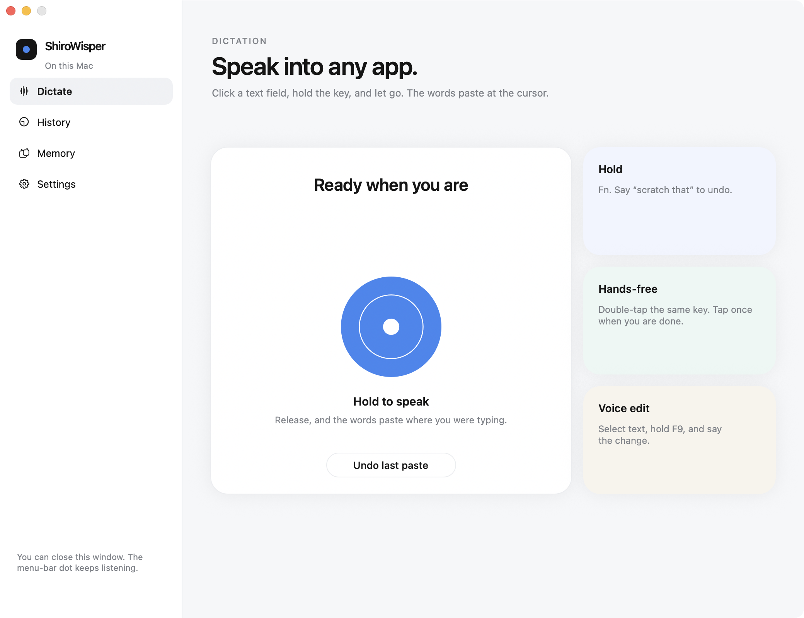

Drag it across
In the window that opens, drop ShiroWisper on the Applications folder.
Mac dictation
Hold a key, talk, and let go. The words paste at the cursor.
Disk image · 21 MB · macOS 13 or later · Apple silicon

Drag ShiroWisper onto Applications. macOS asks for permission once.
In the window that opens, drop ShiroWisper on the Applications folder.
In Applications, right-click ShiroWisper, choose Open, then Open again. If macOS still blocks it, choose Open Anyway in Privacy & Security.
Turn on the microphone and Accessibility. Leave any row named Python off. Quit ShiroWisper and open it again.
Paste a Gemini key from Google AI Studio. Speech goes to Google. The key stays on your Mac.
If it hears you and nothing pastes, turn Accessibility off and on, then quit and reopen. Dictation is about half a cent a minute.